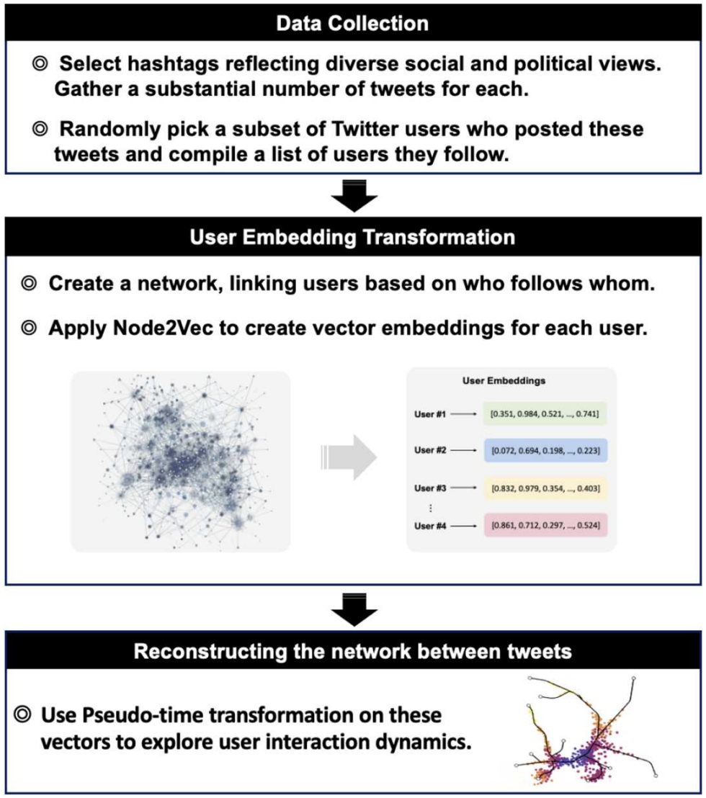
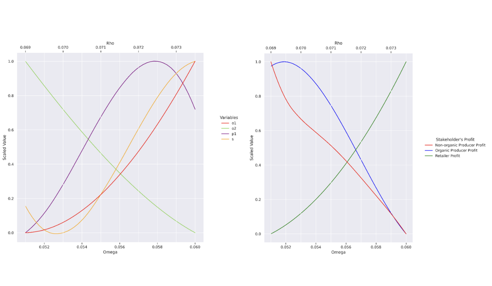
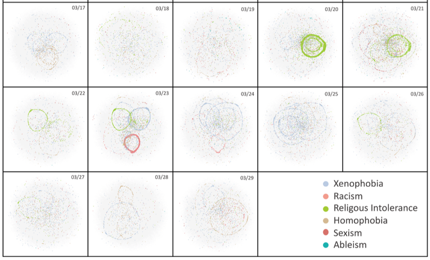
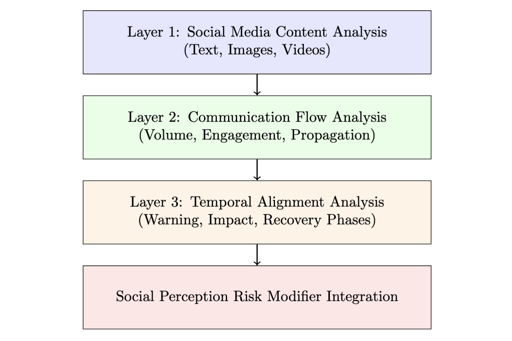
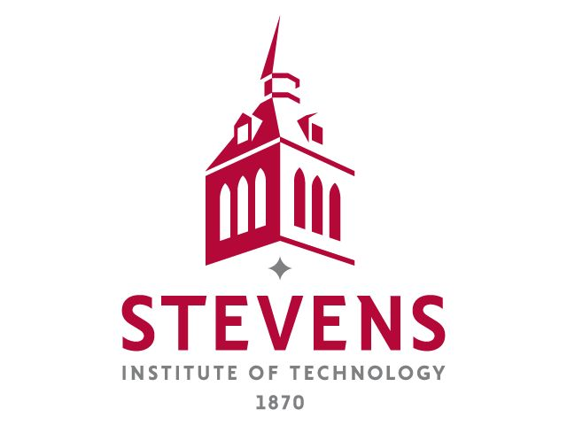

Amirhossein Dezhboro

I am a Ph.D. student in the Department of Systems Engineering at Stevens Institute of Technology, where I work with Dr. Jose Emmanuel Ramirez-Marquez. My research leverages Natural Language Processing and Network Science to model complex social systems. I apply these techniques to critical challenges in urban resilience and disaster management, developing frameworks to analyze community behavior and social media dynamics in response to disruptive events. My research focuses on the intersection of Natural Language Processing and Network Science, developing frameworks to analyze social media dynamics and community behavior in digital environments.
I have professional experience as a Research and Development Engineer, Data Scientist, and Game Developer, with a proven track record of developing high-performance models for financial applications, creating robust data analysis pipelines, and building engaging interactive experiences.
Previously, I earned my M.Sc. in Systems Engineering from Iran University of Science and Technology, where I developed fuzzy optimization models for information diffusion in dynamic collaboration networks.
Research Group
Ph.D. Advisor: Dr. Jose Emmanuel Ramirez-Marquez
Current Research Collaborators: Dr. Carlo Lipizzi, Dr. Aleksandra Krstikj,
Research Highlights

Research Summary
As a systems researcher in Machine Learning and Social Network Analysis, I embed advanced NLP and network science methodologies into novel frameworks for understanding complex social systems. My research addresses critical challenges at the intersection of technology and society, particularly focusing on how digital communities form, evolve, and respond to disruptions.
Using my systems, researchers can more effectively analyze social media dynamics, policymakers can better understand community resilience, and organizations can optimize information diffusion strategies. My work spans both theoretical contributions (developing new optimization models and algorithms) and practical applications (implementing scalable solutions for real-world problems).
To ensure my research has broad impact, I collaborate extensively with domain experts in urban planning, disaster response, and computational social science. I also conduct rigorous empirical studies using large-scale social media datasets and employ both qualitative and quantitative methodologies to validate my findings. My ultimate goal is to develop intelligent systems that enhance our understanding of human behavior in digital environments and improve societal outcomes.
Selected Publications





Professional Experience
Teaching Assistant
- Elements of Operations Research (EM 605-A): Guide students in applying linear programming and mathematical modeling techniques
- Conduct tutorial sessions on optimization methods, linear programming, and decision analysis
- Project Management of Complex Systems (EM 612-A): Guide students in developing project plans, defining scope, and performing risk analysis
- Conduct tutorial sessions on project scheduling, resource allocation, and budget management
Research and Development Engineer
- Developed high-performance reinforcement learning models for profit maximization, risk minimization, pairs trading, and strategy switching
- Applied state-of-the-art theories in portfolio management, utilizing stochastic optimization, time-series analysis, and reinforcement learning techniques
- Developed and backtested statistical models to evaluate the performance of trading strategies against diverse criteria
- Conducted system maintenance and debugging to ensure the accuracy and reliability of analytical tools and data
Game Developer
- Collaborated with a designer to develop indie games using C# and C++ (Unity Engine).
- Contributed to game mechanics, programming, and system design
Technical Skills
Programming Languages
Machine Learning
Data Science
Frameworks & Tools
Education

Ph.D. in Systems Engineering

M.Sc. in Systems Engineering
B.Sc. in Mechanical Engineering
Academic Achievements & Memberships
Academic Excellence
- 🎓 Perfect GPA (4.0/4.0) at Stevens Institute of Technology
- 📚 18+ research citations across multiple domains
- 📖 Publications in high-impact IEEE journals
Professional Memberships
- 🖥️ IEEE Computer Society (2025 - Present)
- 👥 IEEE Young Professionals (2025 - Present)
- 📊 INFORMS Data Mining Society (2025 - Present)
- 📈 INFORMS Analytics Society (2025 - Present)